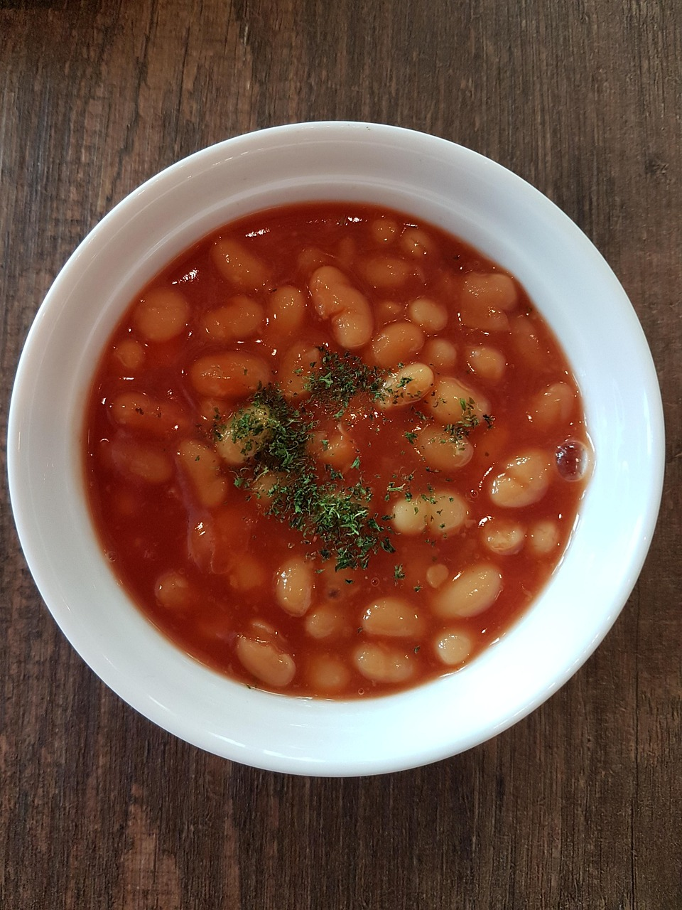

Home
Baked beans

Image by Peggy Chai from Pixabay
Description
A simple homemade version of classic baked beans, cooked in a rich tomato sauce with onion and garlic. Perfect as a side dish or on toast.
Ingredients
- 1 tbsp vegetable oil
- 1 small onion, finely chopped
- 1 clove garlic, crushed
- 1 tin (400 g) chopped tomatoes
- 1 tin (400 g) haricot beans, drained and rinsed
- 1 tbsp tomato purée
- 1 tsp sugar
- Salt and black pepper, to taste
Steps
- Heat the oil in a saucepan over medium heat.
- Add the chopped onion and cook for 5 minutes until soft.
- Add the garlic and cook for 1 minute.
- Stir in the chopped tomatoes and tomato purée.
- Add the sugar, salt, and pepper.
- Add the beans and stir well.
- Simmer gently for 15–20 minutes, stirring occasionally.
- Taste and adjust seasoning if needed.
Recipe content generated with help from ChatGPT; all code is my own.